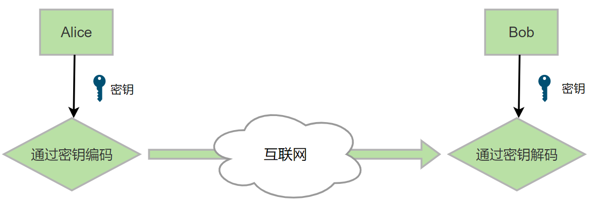
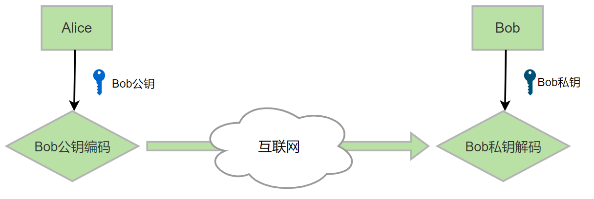
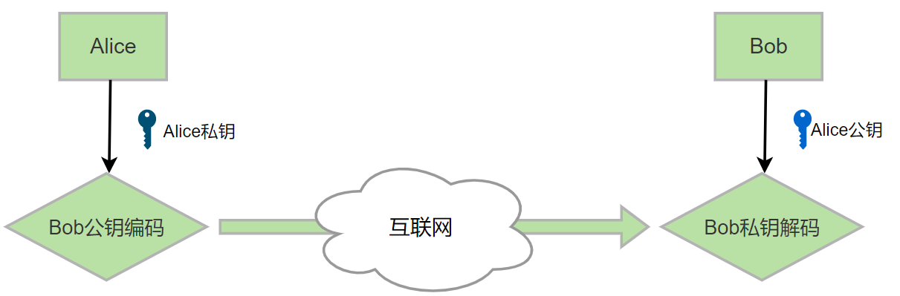
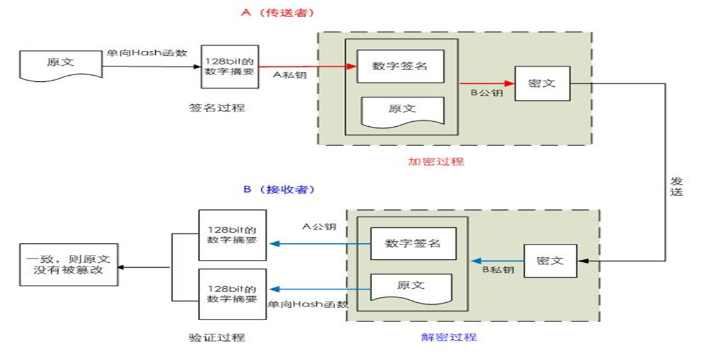

安全机制
1 常见的安全攻击 STRIDE
- Spoofing 假冒，与真实网站界面相同，欺骗浏览者提交敏感信息
1 | 发送邮件服务 |
Tampering 篡改，修改网络中的数据包以达到某种目的
Repudiation 否认
Information Disclosure 信息泄漏
1 | yum -y install telnet.server |
Denial of Service 拒绝服务，使计算机或网络无法提供正常的服务
Elevation of Privilege 提升权限，将用户权限通过非法手段提高，以到达执行敏感操作的目的
2 加密算法和协议
对称加密
非对称（公钥）加密
单向加密
认证协议
2.1 对称加密算法

对称加密：加密和解密使用同一个密钥
特性：
加密、解密使用同一个密钥，效率高
将原始数据分割成固定大小的块，逐个进行加密
缺陷：
密钥过多
密钥分发
数据来源无法确认
常见对称加密算法:
DES：Data Encryption Standard，56bits
3DES
AES：Advanced (128, 192, 256bits)
Blowfish，Twofish
IDEA，RC6，CAST5
1 | Alice ---Bob |
2.2 非对称加密算法
2.2.1 非对称加密算法介绍
非对称加密：密钥是成对出现
公钥：public key，公开给所有人，主要给别人加密使用
私钥：secret key，private key 自己留存，必须保证其私密性，用于自已加密签名
特点：用公钥加密数据，只能使用与之配对的私钥解密；反之亦然
功能：
数据加密：适合加密较小数据,比如: 加密对称密钥
数字签名：主要在于让接收方确认发送方身份
缺点：
密钥长,算法复杂
加密解密效率低下
常见算法：
RSA：由 RSA 公司发明，是一个支持变长密钥的公共密钥算法，需要加密的文件块的长度也是可变的,可实现加密和数字签名
DSA（Digital Signature Algorithm）：数字签名算法，是一种标准的 DSS（数字签名标准）
ECC（Elliptic Curves Cryptography）：椭圆曲线密码编码学，比RSA加密算法使用更小的密钥，提供相当的或更高等级的安全
2.2.2 非对称加密实现加密

接收者公钥加密，接收者私钥解密
数据加密是为了保证信息的机密性，任何知道接收方的公钥的都可以向接收方发送信息，但是只有拥有私钥的才能解密出来
接收者
生成公钥/密钥对：P和S
公开公钥P，保密密钥S
发送者
使用接收者的公钥来加密消息M
将P(M)发送给接收者
接收者
- 使用密钥S来解密：M=S(P(M))
1 | Alice ---Bob |
2.2.3 非对称加密实现数字签名

发送者私钥加密，发送者公钥加密
数字签名是为了保证信息的完整性、真实性、不可否认性，任何接收方都可以用公钥解密，验证数据的正确性
得到文件之后，用相同的算法获取文件摘要，再跟官方提供的摘要值对比，就能判断文件是否被篡改过
发送者
生成公钥/密钥对：P和S
公开公钥P，保密密钥S
使用密钥S来加密消息M
发送给接收者S(M)
接收者
- 使用发送者的公钥来解密M=P(S(M))
2.2.4 RSA和DSA
RSA：RSA是目前最有影响力的公钥加密算法，它能够抵抗到目前为止已知的所有密码攻击，已被ISO推荐为公钥数据加密标准。RSA算法基于一个十分简单的数论事实：将两个大素数相乘十分容易，但那时想要对其乘积进行因式分解却极其困难，因此可以将乘积公开作为加密密钥
DSA：DSA是基于整数有限域离散对数难题的，其安全性与RSA相比差不多。DSA只是一种算法，和RSA不同之处在于它不能用作加密和解密，也不能进行密钥交换，只用于签名,它比RSA要快很多
2.3 单向哈希算法
哈希算法：也称为散列算法，将任意数据缩小成固定大小的“指纹”，称为digest，即摘要
特性：
任意长度输入，固定长度输出
若修改数据，指纹也会改变，且有雪崩效应，数据的一点微小改变，生成的指纹值变化非常大。
无法从指纹中重新生成数据，即不要逆，具有单向性
功能：数据完整性
常见算法
md5: 128bits、sha1: 160bits、sha224 、sha256、sha384、sha512
常用工具
md5sum | sha1sum [ –check ] file
openssl、gpg
rpm -V
1 | hash(data)-->digest摘要,相当于指纹 |
查看文件的哈希值
1 | #md5 以16进制显示, 32*4=128 |
2.4 综合应用多种加密算法
2.4.1 实现数据加密
对称加密和非对称加密
无法验证数据完整性和来源
1 | A-->B |

2.4.2 实现数字签名
不加密数据，可以保证数据来源的可靠性、数据的完整性和一致性
1 | data+Sa(hash(data)) #先哈希加密数据，再用A的私钥接着加密 |

2.4.3 综合加密和签名
即实现数据加密，又可以保证数据来源的可靠性、数据的完整性和一致性
1 | #方法一 |

1 | #方法二 |

2.5 密码交换
密钥交换：IKE（ Internet Key Exchange ）
公钥加密：用目标的公钥加密对称密钥
DH (Deffie-Hellman)：生成对称（会话）密钥
DH 介绍
这个密钥交换方法，由惠特菲尔德·迪菲（Bailey Whitfield Diffie）和马丁·赫尔曼（MartinEdward Hellman）在1976年发表
它是一种安全协议，让双方在完全没有对方任何预先信息的条件下通过不安全信道建立起一个密钥，这个密钥一般作为“对称加密”的密钥而被双方在后续数据传输中使用。
DH数学原理是base离散对数问题。做类似事情的还有非对称加密类算法，如：RSA。
其应用非常广泛，在SSH、VPN、Https…都有应用，勘称现代密码基石
DH 实现过程：
1 | A: g,p 协商生成公开的整数g, 大素数p |
DH 特点
泄密风险：私密数据a，b在生成K后将被丢弃，因此不存在a，b过长时间存在导致增加泄密风险。
中间人攻击：由于DH在传输p，g时并无身份验证，所以有机会被实施中间人攻击，替换双方传输时的数据
范例
1 | g=23 |
3 CA和证书
3.1 中间人攻击
中间人截获服务器向客户端发送的真正公钥，将假公钥发送给客户端，让客户端用假公钥加密数据，从而中间人可以利用自己的私钥解密
并查看加密的数据，并篡改数据利用真公钥发送给服务器

3.2 CA和证书
CA证书代表信息的真伪，通过CA证书，可以确定客户端收到的公钥是否是真的公钥，从而防止中间人攻击，实现公钥的安全交换
子CA证书由根CA证书颁发，根CA证书由自己给自己颁发


PKI：Public Key Infrastructure 公共密钥加密体系
签证机构：CA（Certificate Authority）
注册机构：RA
证书吊销列表：CRL
证书存取库：
X.509：定义了证书的结构以及认证协议标准
版本号
序列号
签名算法
颁发者
有效期限
主体名称
证书类型：
证书授权机构的证书
服务器证书
用户证书
获取证书两种方法：
自签名的证书： 自已签发自己的公钥
使用证书授权机构：生成证书请求（csr）将证书请求csr发送给CACA签名颁发证书
自签名证书和根证书的区别
根证书（Root Certificate）就是自签名证书，不过签发机构不同，他有就有区别，它们之间有以下区别：
自签名证书（Self-Signed Certificate）
颁发者和使用者是同一个实体： 自签名证书是由实际使用该证书的实体（通常是个人、组织或设备）自行创建和签名的证书。颁发者和使用者是同一个实体，没有第三方 CA 参与。
信任度较低： 自签名证书在公共网络中信任度较低，因为它们没有受到受信任的第三方 CA 的验证。当客户端连接到使用自签名证书的服务时，通常会收到安全警告，用户需要手动确认是否信任该证书。
用途有限： 自签名证书通常用于内部测试、开发环境或局域网中，而不是在公共网络中使用。它们提供了加密通信的能力，但没有得到广泛信任。
根证书（Root Certificate）
由受信任的 CA 颁发： 根证书是由受信任的证书颁发机构（CA）签名并颁发的证书。CA 是一个受信任的实体，它通过验证证书请求者的身份，并签发数字证书。根证书是 CA 的根证书，它本身是自签名证书。
信任度高： 根证书由操作系统、浏览器等软件内置，因此被广泛信任。当使用者收到由受信任 CA 签发的证书时，不会收到安全警告，因为这些证书是受信任的。
广泛用于公共网络： 根证书和由它签发的中间证书（Intermediate Certificate）通常用于公共网络中，例如用于加密网站的 HTTPS 通信。这些证书能够建立安全的、受信任的通信连接。